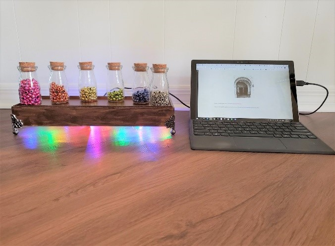
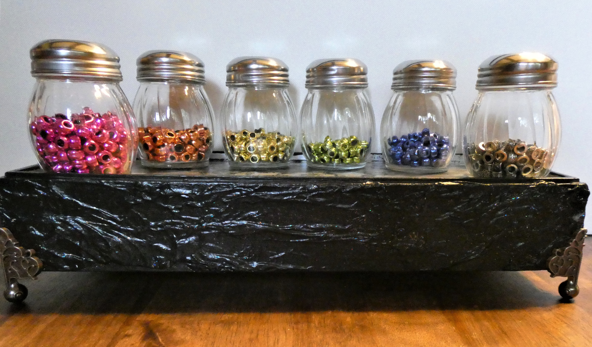
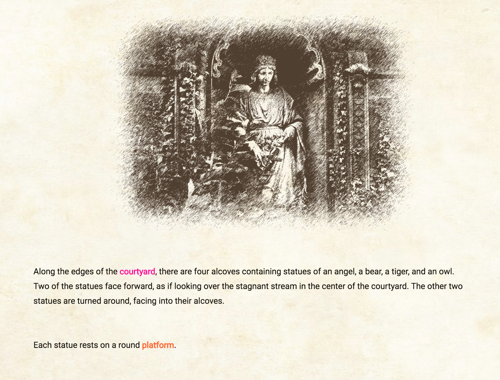
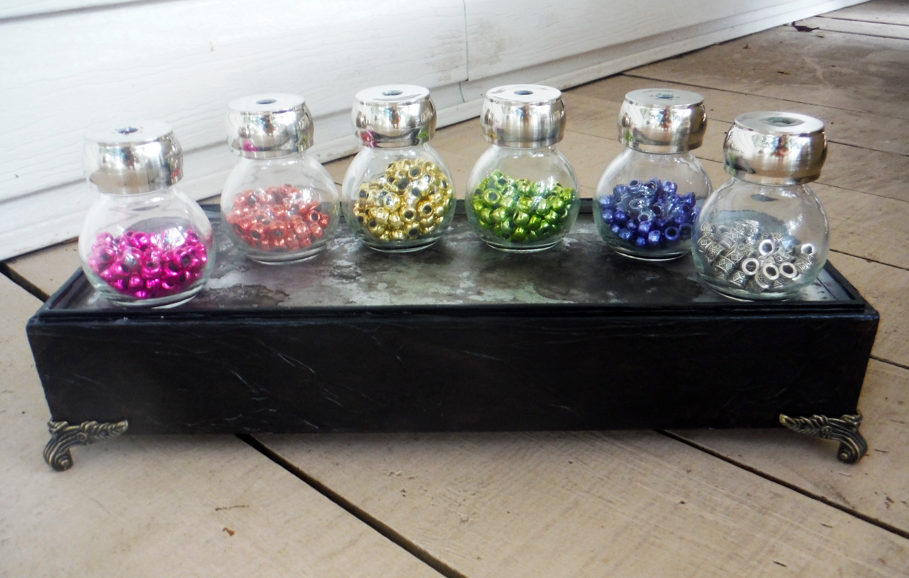

BeadED Adventures brings the tangibility of a tabletop game into a video game. It's an interactive narrative where players solve STEM-based puzzles, and their choices shape both the plot and a tangible learning artifact: a string of beads that becomes a bracelet, keychain, or bookmark.

Drawing on Loominary (Sullivan et al., 2018), BeadED Adventures aims to present STEM subjects in a way that appeals to underrepresented youth who might otherwise be put off by how those fields are typically presented in American culture. Following constructivist learning philosophies and emphasizing player autonomy, the design rests on four goals: be engaging, generate a tangible artifact, encourage creativity, and foster autonomy. Future studies aim to test the artifact's value as a recall and comprehension tool for the embedded STEM concepts.
Current Version

You can try the proof-of-concept Twine build. In place of the physical bead apparatus, use your keyboard's number keys: magenta–1, bronze–2, gold–3, green–4, purple–5, silver–6. An example passage covering loop concepts is demonstrated in this 8-minute video.
Earlier Versions




Presentations
- Johnson, E.K. and Sullivan, A. (2020). Exploring Tangible Learning Artifacts: The Development of BeadED Adventures. Electronic Literature Organization Conference 2020, Orlando, FL (held virtually due to COVID-19), July 16–19, 2020.
- Johnson, E.K. and Sullivan, A. (2020). BeadED Adventures. UCF Downtown Maker Space Grand Opening, November 15, 2020.
- Sullivan, A. and Johnson, E.K. (2019). BeadED Adventures: Crafting STEM Learning. Thirteenth International Conference on Tangible, Embedded, and Embodied Interaction (TEI '19), Tempe, Arizona, March 18, 2019.
- Johnson, E.K. and Sullivan, A. (2018). BeadED Adventures: Using Tangible Game Artifacts to Assist STEM Learning. International Academic Conference on Meaningful Play, East Lansing, Michigan, October 12, 2018.
- Johnson, E.K. and Sullivan, A. (2018). BeadED Adventures: An Origin Story. Games and Interactive Media Research Group Meeting, UCF, August 10, 2018.
Team
Emily K. Johnson · Anne Sullivan
← Back to home